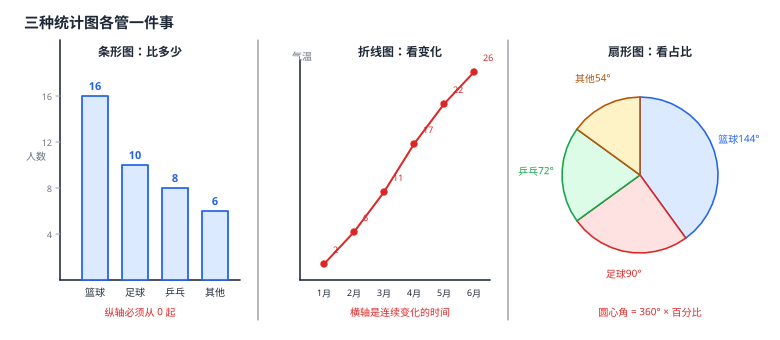

统计图表
数据收集完不能只看一堆数字——画成图，结构立刻现形。初中只认三种统计图：条形图用竖条的高度比较各类别的数量多少；折线图用折线的起伏反映数量随时间等连续变量的变化趋势；扇形图（饼图）用扇形圆心角表示各部分占总数的百分比。三条硬规矩：扇形图的圆心角 =360^\circ× 该部分所占百分比；折线图横轴必须是连续变化的量（如时间），用扇形图表示时间序列是错的；条形图的纵轴起点必须是 0，否则长短的差别会被夸大。选图的口诀是——比多少用条形，看变化用折线，看占比用扇形。
| 所属主题 | 统计 |
|---|---|
| 所属模块 | 统计与概率 |
| 课标学段 | 第四学段（7~9 年级） |
| 前置知识 | 数据的收集、平面直角坐标系与函数 |
| 核心素养 | 数据观念几何直观应用意识 |
教材定位
人民教育出版社《人教版（2024版）义务教育教科书·数学》
七年级下册第12章 数据的收集、整理与描述12.2 用统计图描述数据
对应七下 12.2 用统计图描述数据（12.2.1 扇形图、条形图和折线图 / 12.2.2 直方图 / 12.2.3 趋势图）：三种统计图、频数分布直方图与趋势图。
说明
先看表格再看图。一组数据整理成频数分布表：把数据按类别（或区间）归类，每一类出现的个数叫频数，每一类的频数占总数（样本容量）的比叫频率。频数与频率一一对应，频率之和为 1。表格给出精确数字，图给出直观印象，两者是互补的。
条形图用一根根竖条表示各个类别的频数，条的高矮就是数量的多少。它最擅长回答「哪个多、哪个少」。两条纪律：纵轴必须从 0 开始（若从某个非零数开始，条形的差别会被视觉放大，把 10 与 12 的差别画得像天壤之别）；类别的顺序可以按数量排，也可以按约定的顺序排。
折线图用点连成折线，横轴是连续变化的量（最常见是时间），纵轴是另一个量。它最擅长回答「怎么变的」——上升、下降、峰值出现在什么时候。折线只连接实际观测到的点，点与点之间并没有更多的数据，线段本身不能读成「这段时间里的平均值」。
扇形图（饼图）把一个圆按比例分成若干块，每块表示一部分占总数的百分比。它最擅长回答「占多大比例」。画法：某部分扇形的圆心角 =360^\circ× 该部分所占的百分比；若已知圆心角，反过来求百分比用「圆心角 ÷ 360^\circ」。扇形图只能表示各部分与整体的关系，不能表示随时间的连续变化——用扇形图画月度气温是典型的误用。
选图看三问：想比数量多少 → 条形图；想看随另一个量的变化趋势 → 折线图；想看各部分占整体的比例 → 扇形图。一份完整的统计报告常常三种图都用：条形图给细节，折线图给趋势，扇形图给构成。
频数分布直方图是数据分组的专用画法：先把数据分段（组距一致），数出每段数据的个数（频数），用并排的矩形表示，矩形的高就是频数。它与条形图长得像但本质不同：条形图的横轴是离散类别（如四种口味），条与条之间留空隙；直方图的横轴是连续分组（如 150\sim 155、155\sim 160 厘米），条与条必须相连——因为段与段是接着的。直方图回答的问题是「数据集中在哪几段、分布是高是扁」。
使用场景
班级构成分析：班级各小组人数用条形图，一眼看出哪组人多；各小组人数占全班的比例用扇形图，适合在班会上讲。
气象与产销分析：逐月气温或逐月销量用折线图看趋势与拐点；产品的销量构成用扇形图，便于向决策者说明「主力产品占多少」。
注意点
扇形图的圆心角要用同一个总体计算：每一块的圆心角对应的百分比，必须都以总体（样本容量）为分母。若总数用错了，圆心角之和就不是 360^\circ——算完记得验算这一条，这是最快的自查。
纵轴不要截断。条形图的纵轴从非零数开始，会让 5 与 10 的差别在图上看着像两倍甚至更多。条形图纵轴必须从 0 起，这是它与折线图的重要区别（折线图表示趋势，纵轴起点可以不是 0）。
折线图的横轴必须是连续变化的量。若横轴是「篮球、足球、乒乓球」这种互不相干的类别，折线把它们连起来没有意义——那是条形图的活。
读图先看坐标轴。折线图与条形图的纵轴刻度可能不同、可能不从 0 起，读数前先确认刻度，否则会把两个点的差距读错好几倍。
直方图各组的组距要一致，频数才与矩形的高成正比；分组时每组的边界归属要统一约定（如「含下限不含上限」），否则重复或漏计。趋势图是 2024 版新加入的图形：横轴为时间、用连线展示变化趋势，画法与折线图相同，但更强调「预测延伸」的用途。
证明

图 1：三种统计图各管一件事——条形图比多少，折线图看变化，扇形图看占比
证明
结论 1条形图的纵轴必须从 0 起，而折线图的纵轴起点可以不是 0——这是两种图最本质的差别。
条形图靠长度传达数量，而人眼对长度的比较是相对的。若纵轴从 9 开始，10 与 12 实际只差 2，但两根柱都从 9 画起，露出来的高度是 1 对 3，看上去像差了三倍——图形本身就在撒谎。折线图表达的是「位置的高低变化」而不是「长度的大小」，所以纵轴起点可以不是 0，这是两种图最本质的差别。
关键一步条形图靠长度传达数量，而长度的比较只有在同一个起点下才对应数量的比较：纵轴从 9 起，柱长画出的差别是相对于起点 9 的长度，10 与 12 只差 2 看上去却像差了一大截，比例被放大了。折线图表达的是「位置的高低变化」，位置的高低不依赖零点在哪里，所以纵轴起点可以不是 0。
结论 2扇形图中某部分的圆心角等于 360^\circ 乘该部分所占的百分比；反过来，百分比等于圆心角 ÷ 360^\circ。
扇形图是按角度划分整个圆的，整圆周长对应的圆心角是 360^\circ。若某部分占整体的 p%，把它按同样的比例去分 360^\circ，自然得到 360^\circ×p/100。所以「求圆心角」与「求百分比」是同一个比例关系的两个方向：圆心角 ÷ 360^\circ= 百分比，百分比 × 360^\circ= 圆心角。
关键一步依据是扇形图按角度划分整个圆——整圆对应圆心角 360^\circ，所以某部分占整体的 p% 就是整圆角度的 p%，即 360^\circ×p/100。角度与百分比是同一个比例关系在两种单位下的读法，所以「求圆心角」与「求百分比」互为逆运算：圆心角 ÷ 360^\circ= 百分比，百分比 × 360^\circ= 圆心角。
结论 3折线图用线段的斜率直接展示变化的快慢；条形图只能逐个比多少，不便于表现变化的快慢。
折线图把每个观测点用直线段连接，线段的斜率直接表示变化速率——上升段陡说明涨得快，下降段陡说明降得快。条形图是彼此孤立的竖条，只能告诉你「这一根多高」，无法告诉你「从这一根到那一根变化多快」。要表达变化，必须用折线把点连起来。
关键一步折线图把每个观测点用直线段连接起来，线段的斜率直接表示变化速率——上升段陡说明涨得快，下降段陡说明降得快，趋势就写在这条折线的形状里。条形图是彼此孤立的竖条，只有「这一根多高」这一个数，柱与柱之间没有连线，也就没有「从这一根到那一根变化多快」这个信息。要表达变化，必须用折线把点连起来。
结论 4画图前必须先算清频数与频率，因为图上的每一个几何元素都对应一个数字。
图上的每一个几何元素都对应一个数字——条形的高是频数，扇形的角是频率转成的圆心角，折线的点是频数。不先算清这些数，图只是「看起来像那么回事」，读不出任何结论。先算清频数与频率，是画图的第一步，也是最重要的一步。
关键一步图与数据之间是一一对应的：条形的高是频数，扇形的角是频率转成的圆心角，折线的点是频数。这些数不先算清，图上就没有可读的内容，只是「看起来像那么回事」，读不出任何结论。先算清频数与频率，是画图的第一步，也是最重要的一步。
动手实验
拿本班同学做一次微型调查：统计全班同学最喜欢的运动的人数，做成频数表，然后画成条形图；再算各运动的人数占总人数的百分比，画成扇形图（用圆规量出各扇形的圆心角）。最后改换坐标轴的起点：把条形图的纵轴从 0 改成从 8 起（画在坐标纸上），你会发现「最喜欢的运动人数最多和第二多之间」的差距看起来突然变得悬殊——这就是被截断的纵轴在骗人。把这个现象讲给同学听，比背十遍「纵轴从零起」管用。
解题思路
从数据到图五步：① 整理成频数分布表，算出每个类别的频数与频率；② 看要回答什么问题——比多少选条形图、看变化选折线图、看占比选扇形图；③ 画坐标轴并标好名称与单位（纵轴从 0 起，横轴标清类别或时间）；④ 按数据描点、连线或画条、画扇形；⑤ 补上标题与单位，检查有没有漏项、有没有多出未在表中的数据。
求扇形图圆心角两步：① 求该部分的百分比（频数 ÷ 样本容量）；② 乘 360^\circ。算完把各部分圆心角相加，验算是否等于 360^\circ。
读统计图三步：① 先看清横纵轴各表示什么、单位是什么、纵轴起点是不是 0；② 再找极值（最高点、最低点）与转折（折线改变方向处）；③ 最后做简单比较（谁多谁少、相差多少），并把结论说成完整的一句话。
按场景的例题
例 1（场景：图形设计） 班级运动偏好的扇形图圆心角
某班 40 名同学的课外运动偏好统计如下：喜欢篮球 16 人，足球 10 人，乒乓球 8 人，其他 6 人。求各类别在扇形统计图中所占的圆心角，并说明画条形图时纵轴应怎样设置。
解：先算百分比，样本容量为 40。篮球：16/40=40%，圆心角 =40%× 360^\circ=144^\circ。足球：10/40=25%，圆心角 =25%× 360^\circ=90^\circ。乒乓球：8/40=20%，圆心角 =20%× 360^\circ=72^\circ。其他：6/40=15%，圆心角 =15%× 360^\circ=54^\circ。验算：144^\circ+90^\circ+72^\circ+54^\circ=360^\circ，四块正好拼成整圆 ✓。画条形图时纵轴表示人数，必须从 0 起（最高柱到 16 格即可），这样柱高才与人数成正比，不会夸大差别。
答：篮球 144^\circ、足球 90^\circ、乒乓球 72^\circ、其他 54^\circ；条形图纵轴从 0 起。
例 2（场景：数据调查） 从折线图读取气温变化趋势
某地某年 1 月至 6 月的平均气温（单位：℃）依次为 2、6、11、17、22、26。用折线图表示这组数据，并指出气温上升最快的月份区间。
解：在坐标系中横轴标 1 月至 6 月，纵轴标气温（单位℃），描出六个点 (1,2),(2,6),(3,11),(4,17),(5,22),(6,26)，依次用线段连接。比较相邻两月的升高量：1\to2 月升 4℃，2\to3 月升 5℃，3\to4 月升 6℃，4\to5 月升 5℃，5\to6 月升 4℃。上升最快的是 3 月到 4 月这一段（升 6℃），在图上表现为这一段的折线最陡。整条折线从左下向右上，没有回落，说明这半年气温持续上升。
答：折线图上 3 月到 4 月一段上升最快（升 6℃），全程气温持续上升。
例 3（场景：方案选择） 为不同问题选择合适的统计图
某商店要做一份季度经营报告，需要展示三件事：①各部门销售额的多少；②近六个月销售额逐月的变化；③各商品类别销售额占总销售额的比例。请为每件事选择合适的统计图，并说明理由。
解：①比较各部门销售额的多少——用条形图。条形图靠条的高矮直接比较数量，一眼看出哪个部门销售额最大、最小。②展示近六个月销售额逐月变化——用折线图。月份是连续变化的量，折线的起伏能显示销售是在上升还是下降、在哪个月达到峰值。③表示各商品类别占总销售额的比例——用扇形图。扇形图的圆心角直接对应百分比，能清楚地呈现「主力商品贡献了大部分销售额」这类结构信息。注意②不能画成扇形图：月份之间是先后关系而非整体中的部分，用扇形图会把「6 个月」误解成「6 块互不相干的份额」。
答：①条形图；②折线图；③扇形图。折线与扇形不可互换：折线表示连续变化，扇形表示部分与整体的比例。
常用推论
三种图的选择其实由「数据的结构」决定，不由美观决定：数据是无序的类别就用条形图，数据随连续量变化就用折线图，数据是整体的若干部分就用扇形图。看图之前先问「这组数据是什么结构」，图就选对了。
扇形图圆心角的三种考法是同一件事：已知频数与样本容量求圆心角（先百分比再乘 360^\circ）、已知圆心角求百分比（除以 360^\circ）、已知部分求其他部分（用 360^\circ 减去已知的圆心角之和）。守住「各部分圆心角之和恒为 360^\circ」这条，任何变形都不会算错。
纵轴是否从 0 起，是读图与画图的共同底线：截断纵轴会夸大差异，而夸大差异恰恰是统计图表最容易被滥用、也最容易误导人的地方。读图先看轴，画图先定轴——这一步不能省。
易错点
错扇形图中「篮球占 40%」对应的圆心角算成 40^\circ。
为什么错把百分比当成了圆心角本身，漏掉了「乘 360^\circ」这一步。40% 表示占整圆的比例，要转成角度还得乘一圈的度数。
正确圆心角 =360^\circ×40%=144^\circ；反过来百分比 =\dfrac144^\circ360^\circ=40%。
错画表示各月气温变化的条形图，纵轴从 10 开始以节省空间。
为什么错条形图用长度表示数量，纵轴不从 0 起会夸大差异——12℃ 与 20℃ 的真实差距是 8，但画出来会像差了一倍。折线图可以这样省空间，条形图不行。
正确条形图纵轴一律从 0 起；要表现连续变化且需要压缩纵轴时，改用折线图。
错把「一季度各月销售额」画成扇形图，三个扇形分别表示 1、2、3 月。
为什么错扇形图表示各部分占整体的比例，而月份是时间上的先后关系，不是「整体被分成三块」。扇形图会把时间序列误解成份额构成。
正确时间序列用折线图（横轴为月份），或用条形图比较各月多少；扇形图留给「销售额按商品类别构成」这类真正的部分—整体关系。
直观理解
统计图表是数据的三种「读法」：条形图像给每个类别发了一根柱子，比的是谁高；折线图像在时间轴上留了一串脚印，比的是怎么走；扇形图像把一张饼按份额切开，比的是占多少。三者都是把同一个比例关系翻译成不同的视觉语言——条形用长度，折线用斜率，扇形用角度。所以画图前真正要想清楚的只有一件事：这组数据属于哪一种结构。想清楚了，选图、标数、画弧都是顺下来的事（图 1）。